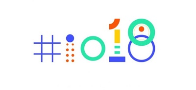
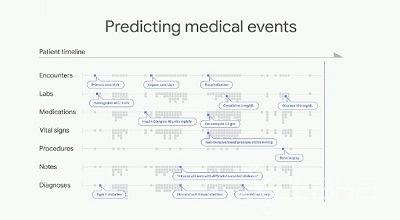
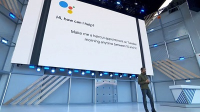
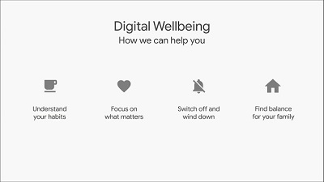
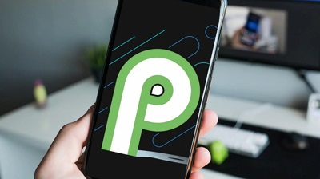

Google I/O sorprende con el uso de la Inteligencia Artificial

El día de hoy Google llevo a cabo su evento anual I/O, en el que nos dio a conocer sus más recientes avances y productos en cuanto a software y uno que otro lanzamiento en hardware. Dichos avances sorprendieron bastante a toda la comunidad seguidora del trabajo de esta empresa, en especial el gran uso que se le ha dado a Google Lens en varios de sus apartados distintos.
El evento de este año tuvo su locación en Mountain View, California, en el anfiteatro Shoreline y fue liderado por el CEO de Google, Sundar Pichai.
Pero sin más preámbulo, démosle un vistazo a todo lo nuevo que Google nos trae.
Al comienzo del evento, Sundar Pichai, CEO de Google, nos menciona a manera de broma para romper el hielo, que los emojis de la hamburguesa y el de el tarro de cerveza que desafiaba las leyes de la física, habían sido resueltos.
Luego de tocar ese gracioso tema, Pichai se pone serio, y menciona los esfuerzos de Google por la educación en tecnología, cómo han llevado sus aprendizajes a distintas comunidades. Luego de esto, Sundar habla sobre la Inteligencia Artificial y como les ha ayudado a llevar mas allá el fácil acceso a la información a todos los usuarios del mundo.
El CEO de Google, a continuación nos habla de como es que la AI ayuda en la medicina, por ejemplo, el programa que se llevó a la India para detectar diabetes a través del escaneo de los ojos y el análisis de la retina, algo que podría ser un método no invasivo para la detección de enfermedades. Menciona que también en cuanto a medicina, la inteligencia artificial les puede ayudar a los doctores a predecir algunas enfermedades y resultados, dándoles "más tiempo para actuar" según menciona Pichai.

Luego de esto hace mención al Machine Learning, que se puede usar para diferenciar las pistas de audio y ayudar a la accesibilidad de las aplicaciones. Otro ejemplo hace que los pacientes incapacitados puedan usar el código morse para usar sus móviles, dándoles una ventana al mundo., ademas, haciendo uso del código morse, google puede generar predicciones de lo que el usuario quiere escribir, es decir, autompleta.
Google está avanzando de forma bastante potente en este campo y no es de extrañar que sea uno de los que más atención atrae en lo relacionado con la inteligencia artificial.
Pero hay más usos, como el autocompletado en Gmail, que llegará a finales de mes y permitirá escribir mucho mas rápido. Utilizan inteligencia artificial para saber qué quieres escribir, Smart Compose lo llaman, disponible desde este mismo mes.
Es momento de hablar de las novedades de Google Photos, apartado en el que también se agrega la inteligencia artificial, por ejemplo, si detecta que en tres fotos sale una misma determinada persona, te recomienda que se las envíes. También si encuentra alguna fotografía demasiado obscura, te la arregla de manera automática, y no sólo eso, si tienes alguna fotografía a blanco y negro que deseas regresar a la vida, te la colorea de una manera muy satisfactoria, o si por otro lado lo que deseas es sustraer el color de alguna foto pero cuidando que el sujeto de dicha imagen no se vea afectado, también puedes hacerlo. Incluso te ofrece la posibilidad de adaptar los documentos a los que sacas fotos para que se muestren como si estuvieran escaneados. Estas nuevas herramientas de Google Photos estarán disponibles en los siguientes dos meses.
Se nos anuncia el lanzamiento del TPU 3.0 dice Sundar que son tan potentes que han tenido que meter refrigeración líquida en sus datacenters.
El asistente de Google será más inteligente que nunca, y además lo será con 6 nuevas voces, incluyendo la del cantante John Legend (no es broma) para hacer nuestras conversaciones menos monótonas, además dejará de ser necesario el hecho de tener que decir siempre "Hey Google" cuando nos refiramos al asistente.

Será capaz de ofrecer una mejor comprensión de las conversaciones. Hasta tal punto, que como ha mostrado Google, será capaz de mantener conversaciones telefónicas con personas reales, por ejemplo, para sacar una cita en la peluquería o reservar en un restaurante. Además a partir de verano llegarán las diferentes pantallas inteligentes, con el asistente integrado, y que se podrán controlar con la voz gracias a este Google Assistant. Ojo, el asistente de Google se integrará a Google Maps a partir de este año, conectando aun más a los negocios con los usuarios de una manera positiva.
Referente al Google Assistant, entra la función "pretty please" que pedirá a los niños que al hacer uso de Google Home, usen las palabras "por favor" y "gracias", esto para evitar que se vuelvan mandones al pedir cosas, además el asistente contestará de manera positiva al detectar que se han usado dichas palabras. Esta función estará disponible a finales de este año para aquellas familias que lo soliciten.
Todos los temas tocados en cuanto al Asistente de Google, debido a lo increíble que resulta el uso de la IA, tuvieron muchísimos aplausos, pero después de esto, es hora de pasar a lo siguiente, la "salud digital".
Entrando en tema de salud digital, Google nos ayuda a controlar nuestro "vicio" por el móvil, esto mediante Android Dashboard, medio con el que podrás saber cuanto tiempo has usado tu móvil y en que aplicaciones, puedes permitirle que te brinde notificaciones de que pares en determinado tiempo, también por la noche si se te dificulta dejar el celular para dormir, dashboard tiene la opción de poner tu pantalla a blanco y negro, no te preocupes, los colores habrán vuelto para cuando despiertes por la mañana.

Google News también llega corregido y aumentado. Gracias a la inteligencia artificial, detecta aquellas noticias que podrían interesarte para colocarlos en tu resumen del día y que puedas ver cuáles son las top cinco noticias más relevantes entre los temas afines a tus intereses, tanto a nivel local como global, que están ocurriendo en el momento. También te muestra los tweets relevantes de un tema en particular. Y, como suele ocurrir con la inteligencia artificial, Google News mejorará en la detección de noticias que te interesan conforme más la uses.
En medio de una crisis de fake news en redes sociales y otros medios, el objetivo de google es darle prioridad a los espacios con mas confiabilidad y profesionalismo, para que de esta manera estés bien informado.
Después de hablar sobre Google News, se le abre paso a Android P, sin duda uno de los temas que mas despertaban ansias.

Inteligencia, simplicidad y bienestar digital, son los pilares de Android P que está pensado para la IA aprenda de tus hábitos sin poner en riesgo tu información, y uno de estos ejemplos, es la batería adaptable.Android aprende de ti, viendo que aplicaciones son las que más utilizas en tu día a día, dedicándoles batería de manera prioritaria y controla el brillo automático para aumentar la durabilidad de tu batería.
Una opción muy interesante es la del modo "no molestar" que te ayuda a balancear el tiempo que utilizas el móvil en los momentos más importantes, bastará con activarlo para dejar de recibir cualquier tipo de distracción. Con la herramienta "shush" solo tienes que voltear el smartphone boca abajo para que de esta manera Android sepa que no quieres ser molestado.
Android P Beta ya está disponible hoy en Pixel, pero llega a nuevas compañías, como Nokia, Samsung, OnePlus, SONY, Mi, entre otras.